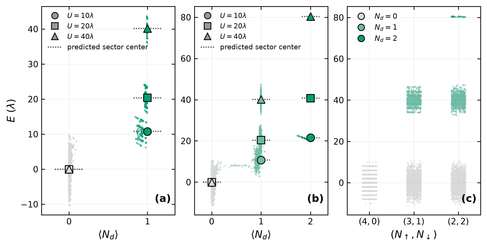

Key exact results (second-moment theorem, four-hop permutation bound, vanishing Schrieffer-Wolff cross term, doubled doublon phase) are machine-checked in Lean 4 with Mathlib, building fermion operators from canonical anticommutation relations.
Abstract
At strong on-site repulsion, the lowest band of $n$ lattice fermions is the spectrum of the hopping projected onto configurations without double occupancy, $H_\infty=P_0H_tP_0$. We study its moments, for few fermions in the square-lattice Hubbard model and, where the arguments allow, on any finite graph. (1) For spin-independent Hermitian hopping (no on-site terms) on any $N\geq2$-site graph, $μ_2=\frac{n(N-n)}{N(N-1)}\sum_{i\neq j}|t_{ij}|^2$, for any spin composition. (2) On any finite graph, $μ_4$ is exactly linear in the same-spin pair count, as four hops permute particles by at most a transposition or 3-cycle; for uniform hopping on a simple graph with $N\geq4$ the slope is $α(N,n)=-8C_4(N-n)(8N-11n-2)/[N(N-1)(N-2)(N-3)]$, fixed by the number $C_4$ of 4-cycles. (3) At large finite $U$, the second-order Schrieffer-Wolff correction is Hilbert-Schmidt orthogonal to $H_\infty$ on every triangle-free graph, so the band variance has no $1/U$ term; its $U^{-2}$ coefficient, an exact trace checked by exact diagonalization, is negative at the low fillings computed. (4) Under a Peierls flux, the exchange slope $α(N,2,Φ)=-\frac{64}{N-1}\cosΦ_\square$ ($L\times L$ tori, $L=3$ or $L\geq5$) carries the ordinary charge-$e$ harmonic, while the doublon (bound-pair) hopping acquires a doubled phase, $t_de^{2iA_{ij}}$: the second-order single-doublon Hamiltonian is exactly $π$-periodic ($h/2e$) under a boundary twist, and the exact two-electron U-band follows numerically, up to $O((2λ)^L/U^{L-1})$. Result (1), the permutation bound, the orthogonality in (3) and the doubled phase are machine-checked in Lean 4. Repulsive binding and the pair charge $2e$ are known; new are the exact moment structure and the derivation of the doubled phase. We make no claim about many-pair phase stiffness, off-diagonal long-range order or superconductivity.
Problem
At strong on-site repulsion, the lowest band of n lattice fermions is the spectrum of the hopping projected onto configurations without double occupancy, H_∞=P_0H_tP_0. The paper seeks the exact structure of its spectral moments, the corrections at large finite U, and the band's response to magnetic flux, for the Hubbard model and for general finite graphs.
Approach
Moments are written as sums over closed walks in the projected configuration graph, with walks classified by the particle permutation they induce. Finite-U corrections come from a Schrieffer-Wolff expansion, and flux dependence from Peierls phases. Results are checked by exact diagonalization and exact sparse traces. The second-moment theorem, the permutation bound, the orthogonality result, the doubled phase and the finite-population identities are formalized in Lean 4 with Mathlib, using only the standard axioms.

Figure 3: Sector structure implied by the counting rule, tested by full exact diagonalization of every interacting composition. All panels share the energy axis of (a), E in units of \lambda . In (a,b), color encodes the doublon expectation value \langle N_{d}\rangle on a continuous white-to-green scale (the manuscript’s virtual-doublon color; darker = more doublons), never a proxy for U . In (a,b
Results
The second moment has a closed form for any spin composition: μ2 = n(N−n)/(N(N−1)) Σ_{i≠j}|t_ij|². The fourth moment is exactly linear in the same-spin pair count, with a slope fixed by the number of 4-cycles. The band variance has no 1/U term on triangle-free graphs. The doublon hopping acquires a doubled phase, so the second-order single-doublon Hamiltonian is π-periodic (h/2e) under a boundary twist.
Figure 10: Exchange contribution to the fourth moment: the same-spin-minus-opposite-spin difference \mu_{4}^{(2,0)}(\Phi)-\mu_{4}^{(1,1)}(\Phi) against the closed-form prediction -64/(N-1)\cos\Phi_{\square} (§ 8 ), n=2 , N=36 ( L=6 ; the horizontal axis \Phi is the plaquette flux \Phi_{\square} ), exact sparse-trace evaluation with a genuine Peierls Hamiltonian, no fitted parameters. Taking this sFigure 11: Doublon flux response (§ 8 ; energies in units of \lambda ): the exact flux-threaded two-electron U-band’s top eigenvalue against the effective doublon model with doubled Peierls phase t_{d}e^{2iA_{ij}} , compared with an undoubled control t_{d}e^{iA_{ij}} , N=36 ( L=6 ), U=40\lambda , no fitted parameters. This is a standard consequence of the effective doublon Hamiltonian’s charge- 2e
L
n
N
analytic
exact
error
3
2
9
7
7
<1e-13
4
3
16
52/5
52/5
<1e-13
4
4
16
64/5
64/5
<1e-13
5
4
25
14
14
<1e-13
6
4
36
512/35
512/35
<1e-13
Second moment at U→∞: analytic theorem (Eq. 8) vs exact sparse evaluation